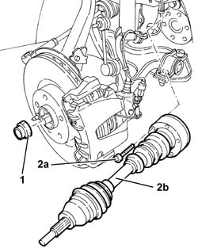
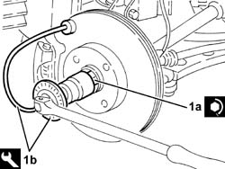
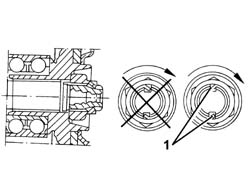
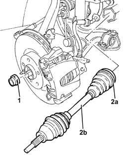
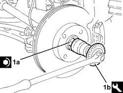
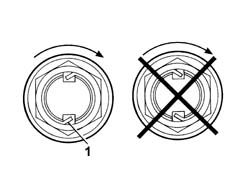

2710A10 drive shaft with joints (one), l/h or r/h - r + r
- Path
- Procedures > 27 AXLE > 2710 FRONT AXLE > 2710A drive shafts and joints > 2710A10 drive shaft with joints (one), l/h or r/h - r + r
- Kind
- repair procedure (removal / refitting; the operation number is the code)
- Applies to
- all engines; all production periods
- Interactive page
- https://sloeber94.github.io/elrnDB-a156/en/#/3238019
Applies to: all engines; all production periods
 Removing
Removing
 Refitting
Refitting4410A80 damper lower fork - r r
4450B10 Front WHEEL (one) - R.R.
7055B64 Engine compartment DUST shield in front wheel arch (one), left or right - R.R.
1. Remove the bevel and undo the nut fixing the driveshaft to the wheel hub.
2. Undo the bolts (2a) and remove the half shaft (2b) complete with joints.

Applies to: engines: 1.6 TS , 1.8 TS; all production periods
Refitting
RemovingFit the half shaft complete with joints and tighten the new bolts to the specified torque.
 | Fastening | Component | Ø | Value (daNm) |
|---|---|---|---|---|
- | Bolt | FRONT DRIVE SHAFT COMPLETE WITH JOINTS | M8 | (Int. diff./ intermediate. driveshaft. side.) 3.6 ÷ 4.4 |
Applies to: engines: 2.5 V6; all production periods
Fit the half shaft complete with joints and tighten the new bolts to the specified torque.
| Fastening | Component | Ø | Value (daNm) |
|---|---|---|---|---|
- | Bolt | FRONT DRIVE SHAFT COMPLETE WITH JOINTS | M10 | 5.0 ÷ 6.1 |
Applies to: engines: 1.9 JTD 8v ; all production periods
Fit the right half shaft complete with joints and tighten the new bolts to the specified torque.
| Fastening | Component | Ø | Value (daNm) |
|---|---|---|---|---|
- | Bolt | FRONT DRIVE SHAFT COMPLETE WITH JOINTS | M10 | 5.0 ÷ 6.1 |
Fit the left half shaft complete with joints and tighten the new bolts to the specified torque.
| Fastening | Component | Ø | Value (daNm) |
|---|---|---|---|---|
- | Bolt | FRONT DRIVE SHAFT COMPLETE WITH JOINTS | M8 | (Int. diff./ intermediate. driveshaft. side.) 3.6 ÷ 4.4 |
Applies to: engines: 2.4 JTD 10v; all production periods
Fit the half shaft complete with joints and tighten the new bolts to the specified torque.
| Fastening | Component | Ø | Value (daNm) |
|---|---|---|---|---|
- | Bolt | FRONT DRIVE SHAFT COMPLETE WITH JOINTS | M8 | (Int. diff./ intermediate. driveshaft. side.) 3.6 ÷ 4.4 |
Applies to: engines: 2.4 JTD 10v; all production periods
1. Tighten the nut (1a) for the driveshaft to the wheel hub to the recommended torque using the tool (1b) for angular tightening.
| Fastening | Component | Ø | Value (daNm) |
|---|---|---|---|---|
- | Nut | FRONT DRIVE SHAFT COMPLETE WITH JOINTS | M24 | 6.7 - 7.4 + 62° |
 | Name | Country |
|---|---|---|
1b | Protractor | 1.820.622.000 |

Applies to: engines: 2.4 JTD 10v; all production periods
1. Using a chisel, stake the nut collar twice, as illustrated.

Applies to: engines: 2.4 JTD 10v; all production periods
7055B64 Engine compartment DUST shield in front wheel arch (one), left or right - R.R.
Applies to: engines: 2.4 JTD 20v; all production periods
Removing
RefittingPROCEED AS FOLLOWS FOR THE LEFT DRIVESHAFT.
Proceed with removal 7055B54 under-engine guard - r r .
Proceed with removal 4450B02 left front wheel r r .
Proceed with removal - 7055B90 Left front WHEEL ARCH LINER - R.R. .
Proceed with removal 4410A80 damper lower fork - r r (Left side).
PROCEED AS FOLLOWS FOR THE RIGHT DRIVESHAFT.
Proceed with removal 7055B54 under-engine guard - r r .
Proceed with removal 4450B04 right front wheel r r .
Proceed with removal - 7055B66 Engine compartment DUST SHIELD protection in right front wheel arch - R.R. .
Proceed with removal - 7055B91 Right front WHEEL ARCH LINER - R.R. .
Proceed with the removal 4410A80 damper lower fork - r r (Right side).
WORK IN THE SAME WAY FOR BOTH DRIVESHAFTS.
1. Remove the bevel and undo the nut fixing the driveshaft to the wheel hub.
2. Loosen the band (2a) and remove the driveshaft (2b) complete with joints.

Applies to: engines: 2.4 JTD 20v; all production periods
Refitting
RemovingPlace the driveshaft complete with joints back in its housing and secure it using a new band.
1. Tighten the nut (1a) for the driveshaft to the wheel hub to the recommended torque using the tool (1b) for angular tightening.
| Fastening | Component | Ø | Value (daNm) |
|---|---|---|---|---|
1a | Nut | FRONT DRIVE SHAFT COMPLETE WITH JOINTS | M24 | (Wheel hub side) 6.6 ÷ 7.3 + 62? ± 2 ? |
| Name | Country |
|---|---|---|
1b | Protractor | 1.820.622.000 |

Applies to: engines: 2.4 JTD 20v; all production periods
1. Using a chisel, stake the nut collar twice, as illustrated.

Applies to: engines: 2.4 JTD 20v; all production periods
PROCEED AS FOLLOWS FOR THE RIGHT DRIVESHAFT.
Proceed with the refitting 4410A80 damper lower fork - r r (Right side).
Proceed with refitting - 7055B91 Right front WHEEL ARCH LINER - R.R. .
Proceed with refitting - 7055B66 Engine compartment DUST SHIELD protection in right front wheel arch - R.R. .
Proceed with refitting 4450B04 right front wheel r r .
Proceed with refitting 7055B54 under-engine guard - r r
PROCEED AS FOLLOWS FOR THE LEFT DRIVESHAFT.
Proceed with the refitting 4410A80 damper lower fork - r r (Left side).
Proceed with refitting - 7055B90 Left front WHEEL ARCH LINER - R.R. .
Proceed with refitting 4450B02 left front wheel r r .
Proceed with refitting 7055B54 under-engine guard - r r .
Topics linked from this page (6)
- 4410A80 damper lower fork - r r
- 4450B02 left front wheel r r
- 4450B04 right front wheel r r
- 4450B10 Front WHEEL (one) - R.R.
- 7055B54 under-engine guard - r r
- 7055B64 Engine compartment DUST shield in front wheel arch (one), left or right - R.R.
Topics that link to this page (7)
- 1008C19 engine link mount - r r
- 2110D53 left hand flange on differential - r+r
- 2110D56 right hand flange on differential - r+r
- 2110D63 rh differential shaft oil seal - r r
- 2110D74 differential l/h inner drive shaft - r + r
- 2710A31 intermediate drive shaft - r r
- 2710A35 intermediate drive shaft mount - r r